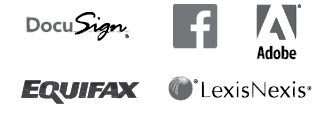
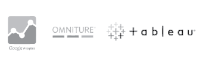

What Sets Us Apart?
Booz Allen understands that digital improvements are all about connectedness. To this aim, we are committed to supporting you in delivering your top digital initiatives by convening the best products and services through our extended network of strategic partnerships. Whether your agency is looking to advance its security monitoring strategy, obtain responsive UX/UI style guides, or integrate a user-friendly content management system, we want to help you pinpoint the challenge, pivot to action, and turn ideas into solutions.
We help clients like you make sense of emerging customer needs and government mandates. Specifically, our solutions center on providing the next wave of three very different types of web properties that deliver or exchange your content and products, data, and documents or records. Booz Allen is working with leading product and service vendors to help clients test specific components of our solution for modern .govs.
my.X.gov
Your customers and the public want to talk to you. myX.gov provides them with tailored information to address inquiries, secure access to their account information or specific transactions, and new ways of reaching an expert online.
data.X.gov
Make your data an asset. data.X.gov promotes transparency, participation, and collaboration by providing the public with information about what industry and the government is doing. The site encourages partnerships and cooperation across the public and the private sector.
exchange.X.gov
Sensitive documents can be difficult to deal with. exchange.X.gov provides your workforce and your customers with secure electronic methods to upload or download sensitive documents. Users can also communicate with agency experts via email while outside the enterprise firewall.
Partnerships Graphic



